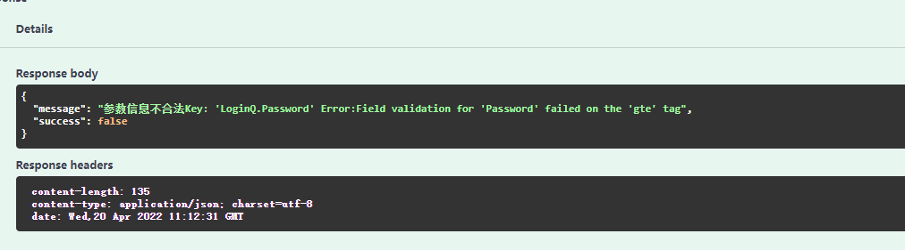

1. 第三章：使用bind绑定参数和参数验证
首先举一个不恰当的例子，当某个API具有很多种参数时，例如下面这种。
// AdvancedSelectPaper doc
// @description es 高级检索筛选论文，包括对文章类型journal的筛选，页数的更换,页面大小size的设计, \n 错误码：401 参数格式错误, 排序方式1为默认，2为引用率，3为年份
// @Tags elasticsearch
// @Param conditions formData string true "conditions 为条件，表示字典的列表：type 123表示运算符must or，not，"
// @Param min_date formData string true "min_date"
// @Param max_date formData string true "max_date"
// @Param page formData int true "page"
// @Param size formData int true "size"
// @Param doctypes formData string true "doctypes"
// @Param conferences formData string true "conferences"
// @Param journals formData string true "journals"
// @Param publishers formData string true "publishers"
// @Param sort_type formData int true "sort_type"
// @Param sort_ascending formData bool true "sort_ascending"
// @Success 200 {string} string "{"success": true, "message": "获取成功"}"
// @Failure 500 {string} string "{"success": false, "message": "错误500"}"
// @Router /es/select/paper/advanced [POST]
若你对每一个参数在注释时都一条条的注释，并且才取参数的时候也一条一条的取，例如page_str := c.Request.FormValue("page")， 此时显然是一段很臭并且不利于编写的代码。此外，大多数情况，参数还存在着非法情况，当遇到如此多的参数，并且若是存在着参数格式不正确，自然也不能一条条的if-else 的验证。在Django中，有着Form的处理方式，而在Gin中则是有bind-data来验证数据，并有validator 来对指定字段值进行验证。
1.1. bind-data basic
相对应在刚刚介绍的Swagger中，使用如下方式来传递一组参数，上一戒中也介绍过，model.LoginQ自行定义在model包中，此时Swagger注释便美观多了。
// @Param data body model.LoginQ true "用户名，密码"
其中LoginQ内容如下
type LoginQ struct {
Username string `json:"username"`
Password string `json:"password"`
}
基本使用方式见下，创建data LoginQ类型，使用ShouldBindJson方法将json格式的信息按照LoginQ转化到data中。
PS：若传输的信息中含有非Json信息，请使用ShouldBind ，而BindJson、Bind与ShouldBindJson、ShouldBind的区别则是是否返回错误信息以供调试。个人建议使用Should。
var data model.LoginQ
if err := c.ShouldBindJSON(&data); err != nil {
panic(err)
}
当然若是每次传递参数都使用如上三行来套模板也有些“臭”。下面简单封装一下上述代码，在utils/gin.go 中添加如下代码.(utils 在我的理解中可以存放一些工具类的函数)
首先先放置一个简单版，尽可对Json进行判断并不返回错误信息。
func BindAndValid(c *gin.Context, model interface{}) interface{} {
if err := c.ShouldBindJSON(&model); err != nil {
_, file, line, _ := runtime.Caller(1)
panic(file + "(line " + strconv.Itoa(line) + "): bind model error")
}
return model
}
而在原来的获取参数部分，则可直接获取
data := utils.BindAndValid(c, &model.LoginQ{}).(*model.LoginQ)
随后使用data.username 即可调用。
1.2. validator
开源项目go-playground/validator是一个基于标签对结构体和字段进行值验证的验证器， 我们依此来作为参数校验。
获取方式
go get github.com/go-playground/validator/v10
下面给出部分常用的标签，具体使用仍需查看官网文档，更详细的中文使用参见url
| 标签 | 含义 |
|---|---|
| required | 必填 |
| gt | 大于 |
| gte | 大于等于 |
| lt | 小于 |
| lte | 小于等于 |
| min | 最小值 |
| max | 最大值 |
| oneof | 参数集内的其中之一 |
| len | 长度要求与 len 给定的一致 |
于是我们对LoginQ进行修改，增加了binding 其中username表示长度3-100，必填，而password表示长度大于等于6必填
type LoginQ struct {
Username string `json:"username" binding:"min=3,max=100,required"`
Password string `json:"password" binding:"gte=6,required"`
}
注：由于gin内置了validator v10于是使用binding，正常应使用：validator:required
并修改原函数。以及更改ShouldBindAndValid函数，让其当验证错误时返回错误信息。
func ShouldBindAndValid(c *gin.Context, model interface{}) error {
if err := c.ShouldBind(&model); err != nil {
return err
}
return nil
}
func Login(c *gin.Context) {
var data model.LoginQ{}
if err := utils.ShouldBindAndValid(c, &data);err != nil {
c.JSON(http.StatusOK, gin.H{
"success": false,
"message": "参数信息不合法" + err.Error(),
})
return
}
c.JSON(http.StatusOK, gin.H{
"success": true,
"message": "登录成功",
"data": "username:" + data.(*model.LoginQ).Username + ",password:" + data.(*model.LoginQ).Password,
})
}
当输入格式不规范时,该接口返回信息：
{
"password": "st",
"username": "string"
}
Response body
{
"message": "参数信息不合法Key: 'LoginQ.Password' Error:Field validation for 'Password' failed on the 'gte' tag",
"success": false
}

PS 可在ShoudBindAndValid 中添加翻译器使其翻译成中文报错，读者可自行尝试。
1.3. 结语
本小节简单介绍了bind-data，以及验证器go validator的使用方法并给出了简单实例。相信聪明的你肯定学会了吧。